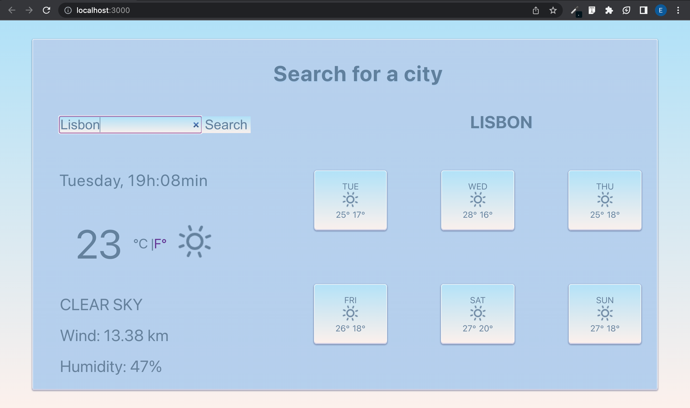

React Weather App - project
Explore my weather web app built with React! Check the current weather and forecasts for any city worldwide. I built this project for the final module of SheCodes course.
View Github repo

My favourite hobby - project
As part of the SheCodes course, I was tasked with creating a web page showcasing my favorite hobby and incorporating a dynamic background color change feature upon click. I used HTML, CSS, and JavaScript.
View Github repo